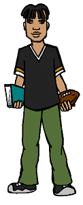

Characters
Characters
|
Mack |
|---|
|

Full Name: Michael Jordan MacKenzie Current Age: 18 Current Vocation: Freshman at Vance University Season One Age: 16 Season One Vocation: Sophomore at Lawndale High First Appearance: The Invitation
Mack (whose middle name was James until his father changed it after attending a Chicago Bulls playoff game) is, like his girlfriend Jodie, intelligent and popular, despite the fact that he's a jock. He is the captain of the Lawndale High varsity football team, which means he constantly has to put up with Kevin's stupidity. He and Daria get along well -- it helps that he's almost as cynical as she is -- and he's an all-around cool guy... but do not call him "Mack Daddy!" |
|
Voice:
Mack's voice is performed by Delon Ferdinand (episodes #102-105), Paul Williams (episodes #110-113 and season 2), Kevin Daniels, Jr. (season 3), and Amir Williams (season 4 onward). |
|
Trivia |
|